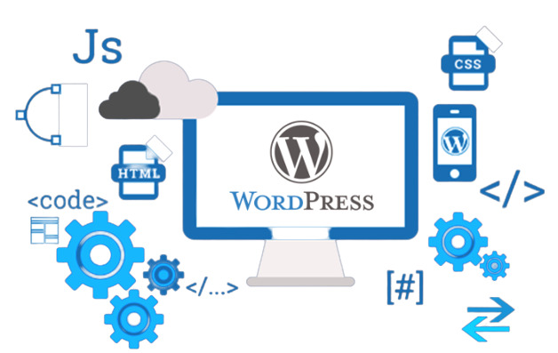

WordPress is a popular content management system that can be used to build websites. It can be used to create a website from scratch, or it can be used to enhance an existing website. WordPress is free and easy to use, making it a popular choice for web developers.
Today it's essential for a business to have a website. Regardless of your industry, you must be visible on the Internet. That's where most people try to find solutions.
WordPress is well-known in the world of website development due to its ease of use. It's free software that you can use to design a website without needing coding knowledge.
Here are some reasons why you should go with WordPress Web Development in Melbourne:
The site's aesthetics are extremely important for businesses to consider. The good news is that WordPress has many gorgeous styles that you can adapt to match your brand image. Many of the themes are free of charge, so you can test out different options to decide which one best suits your website.
Even free-of-charge accounts receive hundreds of responsive templates. There are layouts with 2 or even limitless columns, and even themes whose layout is appropriate for visible portfolios. With respect to style, there are hundreds to choose from that differ depending on your preference, mutually exclusive or flashy.

WordPress enables you to upload all kinds of media, including images and videos, as well as audio and video files. This allows you to add further diverse content and advertise your product and business in several ways.
Musical companies and movie websites that provide video, audio, and photo galleries of film production try to engage their audiences with enhanced content quality. This engenders their viewers' commitment to these sites.
Without search engine optimization, you can hardly survive online.
A novice or professional search engine optimizer, WordPress has made it simple to optimize web content and web pages to rank on search engine results pages, one of the site's main aspects in its content management system (CMS). The system for publishing content, pages, and images is well-developed, too.
Just like how we do search engine optimization (SEO), you can configure your site so that it meets a search engine's needs with the use of site optimization utilities like Yoast SEO. In the next pictures, see how this utility helps you evaluate search engine optimization for content on your site. If not, it'll also allow you to review changes that can be recommended based on SEO best practices.
In the old days, you'd have to be versed in basic coding to make and upload web content. But through the availability of contemporary content management systems like WordPress, you don't have to be skilled to publish content on the site. The process is simpler; you just log onto the website, familiarize yourself with the dashboard, plug in your content (for example, website copies and blogs), and publish.
As of Google's mobile-first update, your survival in the competition to rank first on SERPs is dependent on your website having some degree of mobile-friendliness.
To increase the success of your digital advertising and marketing efforts, your brand should focus on mobile-friendly digital experiences to optimize your audience's online experiences with them. Some may already be struggling with this, as you develop your online presence using older codes.
Since the WordPress platform is open source, programmers can modify and improve it. Expect the latest release of the theme to carry various new features, as well as function-specific plugins to improve website performance.
You'll be able to switch your old website to a different appearance if your rebranding takes place. You can incorporate a few innovative functions or let it evolve along with your growing company.
In conclusion, the WordPress web development platform has to offer developers. It’s free and easy to use, making it an ideal solution for small businesses and start-ups. Plus, its wide range of plugins and themes make it a versatile tool for any website project. Finally, the growing popularity of WordPress means that there are many talented developers available to help you build your dream website.